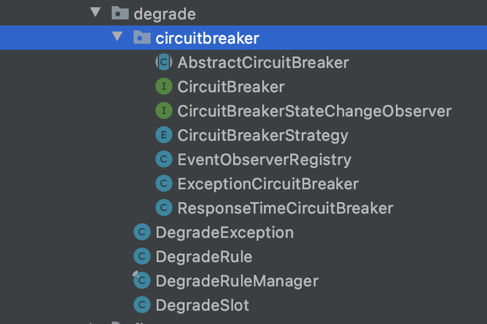

上一篇：Sentinel源码阅读（一）
本文主要包括Sentinel的熔断降级部分。
熔断降级 前文说了，每一种规则都是责任链中的一个节点，对应不同的实现类，熔断降级的类就是DegradeSlot，位于com.alibaba.csp.sentinel.slots.block.degrade包下。目录结构如下：

除了DegradeSlot，还有
CircuitBreaker：断路器，并有异常数断路器ExceptionCircuitBreaker与RT断路器ResponseTimeCircuitBreaker
DegradeException：BlockException的子类，降级抛出的是这个异常类
DegradeRule：降级规则
DegradeSlot的entry方法首先执行performChecking方法，核心逻辑都在这里。
1 2 3 4 5 6 7 8 9 10 11 12 13 14 15 16 17 18 19 @Override public void entry (Context context, ResourceWrapper resourceWrapper, DefaultNode node, int count, boolean prioritized, Object... args) throws Throwable performChecking(context, resourceWrapper); fireEntry(context, resourceWrapper, node, count, prioritized, args); } void performChecking (Context context, ResourceWrapper r) throws BlockException List<CircuitBreaker> circuitBreakers = DegradeRuleManager.getCircuitBreakers(r.getName()); if (circuitBreakers == null || circuitBreakers.isEmpty()) { return ; } for (CircuitBreaker cb : circuitBreakers) { if (!cb.tryPass(context)) { throw new DegradeException(cb.getRule().getLimitApp(), cb.getRule()); } } }
第一步是根据资源标识获取断路器list。DegradeRuleManager.getCircuitBreakers是直接从其内部一个map get资源标识映射的断路器的。而这个map的初始化在DegradeRuleManager.RulePropertyListener::reloadFrom方法中
1 2 3 4 5 6 7 8 9 10 11 12 13 14 15 16 17 private synchronized void reloadFrom (List<DegradeRule> list) Map<String, List<CircuitBreaker>> cbs = buildCircuitBreakers(list); Map<String, Set<DegradeRule>> rm = new HashMap<>(cbs.size()); for (Map.Entry<String, List<CircuitBreaker>> e : cbs.entrySet()) { assert e.getValue() != null && !e.getValue().isEmpty(); Set<DegradeRule> rules = new HashSet<>(e.getValue().size()); for (CircuitBreaker cb : e.getValue()) { rules.add(cb.getRule()); } rm.put(e.getKey(), rules); } DegradeRuleManager.circuitBreakers = cbs; DegradeRuleManager.ruleMap = rm; }
DegradeRule是从配置中取的（或者手动构造）不再赘述，这个方法读取DegradeRule列表，并将其转化为CircuitBreaker。转换的方法比较简单，见DegradeRuleManager::newCircuitBreakerFrom。
然后实际上就是遍历断路器列表，执行其tryPass方法判断调用是否能通过，不通过则抛出DegradeException异常。因此下面重点看下断路器CircuitBreaker类。
Sentinel的断路器借鉴了一篇经典文章：https://martinfowler.com/bliki/CircuitBreaker.html
总的来说，断路器有三种状态：
open：开启状态（即熔断状态），直接返回false，如果开启时间超过了熔断时间，则转为半开状态
half-open：半开状态，这种状态下会允许下一个请求通过，并对其直接进行异常或RT的校验，而不考虑阈值，如果异常，则继续转为开启状态，如果正常，说明链路恢复了，转为关闭状态。
close：关闭状态，返回true
Sentinel的实现完全一致
1 2 3 4 5 6 7 8 9 10 11 public boolean tryPass (Context context) if (currentState.get() == State.CLOSED) { return true ; } if (currentState.get() == State.OPEN) { return retryTimeoutArrived() && fromOpenToHalfOpen(context); } return false ; }
Entry在exit时，会调用CircuitBreaker的onRequestComplete方法，取异常或RT，如果在半开状态，若有异常或RT过高，则继续转为开启，否则关闭。以ResponseTimeCircuitBreaker为例
1 2 3 4 5 6 7 8 9 10 11 12 13 14 15 16 17 18 19 20 21 22 23 24 25 26 27 28 29 30 31 32 33 34 35 36 public void onRequestComplete (Context context) SlowRequestCounter counter = slidingCounter.currentWindow().value(); Entry entry = context.getCurEntry(); if (entry == null ) { return ; } long completeTime = entry.getCompleteTimestamp(); if (completeTime <= 0 ) { completeTime = TimeUtil.currentTimeMillis(); } long rt = completeTime - entry.getCreateTimestamp(); if (rt > maxAllowedRt) { counter.slowCount.add(1 ); } counter.totalCount.add(1 ); handleStateChangeWhenThresholdExceeded(rt); } private void handleStateChangeWhenThresholdExceeded (long rt) if (currentState.get() == State.OPEN) { return ; } if (currentState.get() == State.HALF_OPEN) { if (rt > maxAllowedRt) { fromHalfOpenToOpen(1.0d ); } else { fromHalfOpenToClose(); } return ; } ... }
最后再讲讲异常数断路器ExceptionCircuitBreaker与RT断路器ResponseTimeCircuitBreaker是如何工作的。
不同断路器要实现的其实就是进行异常的统计，并在状态转换时，进行不同的操作。
两者内部都内部维护了一个LeapArray：
1 2 3 4 5 6 7 8 9 10 11 12 13 14 15 16 17 18 19 20 21 22 23 public class ExceptionCircuitBreaker extends AbstractCircuitBreaker { private final int strategy; private final int minRequestAmount; private final double threshold; private final LeapArray<SimpleErrorCounter> stat; public ExceptionCircuitBreaker(DegradeRule rule) { this(rule, new SimpleErrorCounterLeapArray(1, rule.getStatIntervalMs())); } ExceptionCircuitBreaker(DegradeRule rule, LeapArray<SimpleErrorCounter> stat) { super(rule); this.strategy = rule.getGrade(); boolean modeOk = strategy == DEGRADE_GRADE_EXCEPTION_RATIO || strategy == DEGRADE_GRADE_EXCEPTION_COUNT; AssertUtil.isTrue(modeOk, "rule strategy should be error-ratio or error-count"); AssertUtil.notNull(stat, "stat cannot be null"); this.minRequestAmount = rule.getMinRequestAmount(); this.threshold = rule.getCount(); this.stat = stat; } }
LeapArray是一个滑动窗口算法的实现。这个类在Sentinel许多地方都用到了来进行统计，下一节会讲到。每次请求结束时，都会进行统计，将总数与异常数并写入滑动窗口中。以此作为计算是否到达阈值的依据。区别只是判断异常的方式，ExceptionCircuitBreaker根据是否抛出Exception判断，ResponseTimeCircuitBreaker根据记录的RT是否超过阈值判断。
1 2 3 4 5 6 7 8 9 10 11 12 13 14 15 16 17 18 List<SlowRequestCounter> counters = slidingCounter.values(); long slowCount = 0 ;long totalCount = 0 ;for (SlowRequestCounter counter : counters) { slowCount += counter.slowCount.sum(); totalCount += counter.totalCount.sum(); } if (totalCount < minRequestAmount) { return ; } double currentRatio = slowCount * 1.0d / totalCount;if (currentRatio > maxSlowRequestRatio) { transformToOpen(currentRatio); } if (Double.compare(currentRatio, maxSlowRequestRatio) == 0 && Double.compare(maxSlowRequestRatio, SLOW_REQUEST_RATIO_MAX_VALUE) == 0 ) { transformToOpen(currentRatio); }
滑动窗口-LeapArray 由于在熔断降级这里首先看到这个类，那就在本文讲掉了。
TODO